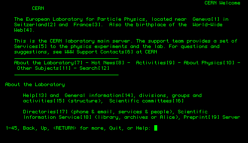
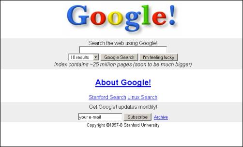

But not with
a boring
slide deck
a boring
slide deck
Well, you know what web is
But now you're becoming designers.
And
with great power...
Here's how it all started
History of the Internet, a movie for Internet's 40th birthday
Some websites
(probably older than you)
(probably older than you)

Cern website as seen on a black-and-green terminal
#somatrix

First website ever, but on a color screen!
Wanna buy a book in the 90's?

Google in 1998
You can play archeologist:
http://archive.org/web/
Why are those so ugly?
Well, a lot has changed
Now from the design point of view
Original article here
It all started
with text
(demo)
with text
(demo)
People invented markup
And just kept
using it
using it
for everything
websites
this presentation
docx
3D magic
http://aframe.io/
http://aframe.io/
And the whole Internet is like that
You can get inspired
or change anything
or change anything
Let's make headlines!
 (demo)
(demo)
It's magic!
Now you become Wizards ;)